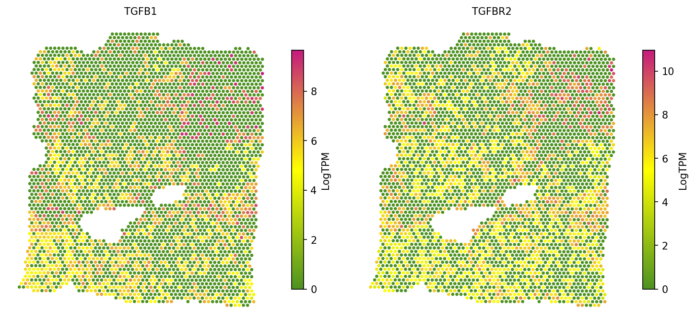

Spatially Variable Genes and Co-expressed L-R Interactions
Python GPU-accelerated Adapted from the SpaCET R tutorial using the spatial-gpu package
Overview
This tutorial demonstrates how to identify spatially variable genes, spatially co-expressed ligand-receptor interactions, and pairwise co-expressed gene pairs using Moran's I measures. Spatial autocorrelation statistics quantify the degree to which gene expression is spatially structured rather than randomly distributed.
Univariate Moran's I identifies genes with significant spatial autocorrelation (spatially variable genes). Bivariate Moran's I detects pairs of genes (e.g., ligand-receptor pairs) that are spatially co-expressed — the expression of one gene at a location is correlated with the expression of its partner in neighboring spots. Pairwise analysis computes bivariate Moran's I for all gene pairs within a targeted set.
Significance is assessed via permutation testing (shuffling spot labels) with Benjamini-Hochberg FDR correction.
API Mapping: R SpaCET → spatial-gpu
| R SpaCET | spatial-gpu (Python) |
|---|---|
| library(SpaCET) | import spatialgpu.deconvolution as spacet |
| calWeights() | spacet.cal_weights() |
| SpaCET.SpatialCorrelation() | spacet.spatial_correlation() |
| create.SpaCET.object.10X() | spacet.create_spacet_object_10x() |
| SpaCET.quality.control() | spacet.quality_control() |
| SpaCET.visualize.spatialFeature() | spacet.visualize_spatial_feature() |
1. Create SpaCET Object
Load the same 10x Visium breast cancer data used in the deconvolution tutorial. Spots are filtered to retain those with at least 100 expressed genes.
import spatialgpu.deconvolution as spacet # Load Visium breast cancer data adata = spacet.create_spacet_object_10x("data/Visium_BC") # Quality control: filter spots with < 100 genes adata = spacet.quality_control(adata, min_genes=100) print(adata)
2. Compute Weight Matrix
Construct a spatial weight matrix using a radial basis function (RBF) kernel.
Each spot pair within the specified radius receives a weight based on their
Euclidean distance: w = exp(-d² / (2 * sigma²)).
Spots beyond the radius receive zero weight, and diagonal entries are set
to zero to exclude self-correlations.
# Compute spatial weight matrix (RBF kernel) # radius=200 μm: maximum neighbor distance # sigma=100 μm: RBF bandwidth parameter W = spacet.cal_weights( adata, radius=200, sigma=100, diag_as_zero=True, ) print(f"Weight matrix shape: {W.shape}") print(f"Non-zero entries: {(W > 0).sum()}")
diag_as_zero=True (default) excludes
self-correlation.
3. Spatially Variable Genes (Univariate Moran's I)
Univariate Moran's I measures the spatial autocorrelation of a single gene. High positive values indicate that neighboring spots tend to have similar expression levels, while values near zero indicate random spatial patterns.
3a. Targeted gene analysis (~2 min)
Analyze a specific set of TGF-beta pathway genes:
# Targeted analysis for TGF-beta pathway genes genes = ["TGFB1", "TGFB2", "TGFB3", "TGFBR1", "TGFBR2", "TGFBR3"] adata = spacet.spatial_correlation( adata, mode="univariate", item=genes, W=W, n_permutation=1000, ) # Access results results = adata.uns['spacet']['SpatialCorrelation']['univariate'] print(results)
p.Moran_I and low p.Moran_Padj are spatially
variable — their expression is spatially structured. TGFBR2 shows the
strongest spatial autocorrelation (I = 0.295) in this dataset.
3b. Genome-wide analysis (~50 min)
To identify all spatially variable genes across the entire transcriptome, set
item=None. This tests all genes in the expression matrix.
# Genome-wide spatially variable gene detection # Warning: this takes ~50 minutes for ~33,000 genes adata = spacet.spatial_correlation( adata, mode="univariate", item=None, W=W, n_permutation=1000, )
4. Spatially Co-expressed L-R Interactions (Bivariate Moran's I)
Bivariate Moran's I measures the spatial cross-correlation between two genes. For ligand-receptor analysis, a high bivariate Moran's I indicates that ligand expression at a spot is correlated with receptor expression at neighboring spots, suggesting spatially coordinated signaling.
4a. Custom gene pairs
import pandas as pd # Define custom ligand-receptor pairs gene_pairs = pd.DataFrame({ "gene1": ["TGFB1", "TGFB1"], "gene2": ["TGFBR1", "TGFBR2"], }) adata = spacet.spatial_correlation( adata, mode="bivariate", item=gene_pairs, W=W, n_permutation=1000, ) # Access bivariate results biv_results = adata.uns['spacet']['SpatialCorrelation']['bivariate'] print(biv_results)
4b. Full L-R database (~20 min)
Set item=None to test all ~2,500 ligand-receptor pairs from
the built-in database. Only pairs where both genes are expressed in the
dataset are tested.
# Test all L-R pairs from the built-in database adata = spacet.spatial_correlation( adata, mode="bivariate", item=None, W=W, n_permutation=1000, )
4c. Visualize co-expression
Visualize the spatial expression of a ligand-receptor pair side by side to confirm their co-expression pattern:
# Visualize spatial expression of TGFB1 and TGFBR2 spacet.visualize_spatial_feature( adata, spatial_type="GeneExpression", spatial_features=["TGFB1", "TGFBR2"], ncols=2, )

5. Pairwise Co-expression (~2 min)
Compute bivariate Moran's I for all pairwise combinations among all expressed genes. This produces a symmetric matrix of spatial co-expression scores (genes × genes), useful for identifying gene modules with coordinated spatial expression.
# Compute pairwise bivariate Moran's I for all genes adata = spacet.spatial_correlation( adata, mode="pairwise", W=W, ) # Access pairwise results (full gene × gene matrix) pairwise = adata.uns['spacet']['SpatialCorrelation']['pairwise'] print(f"Pairwise matrix shape: {pairwise.shape}") # Extract a submatrix for TGF-beta pathway genes tgf_genes = ["TGFB1", "TGFB2", "TGFB3", "TGFBR1", "TGFBR2", "TGFBR3"] print(pairwise.loc[tgf_genes, tgf_genes])
.loc[genes, genes] for specific gene sets of interest.
Session Info
import spatialgpu print(f"spatial-gpu version: {spatialgpu.__version__}") import anndata, numpy, scipy, pandas, matplotlib print(f"anndata: {anndata.__version__}") print(f"numpy: {numpy.__version__}") print(f"scipy: {scipy.__version__}") print(f"pandas: {pandas.__version__}") print(f"matplotlib: {matplotlib.__version__}") try: import cupy print(f"cupy: {cupy.__version__} (GPU backend available)") except ImportError: print("cupy: not installed (CPU-only mode)")